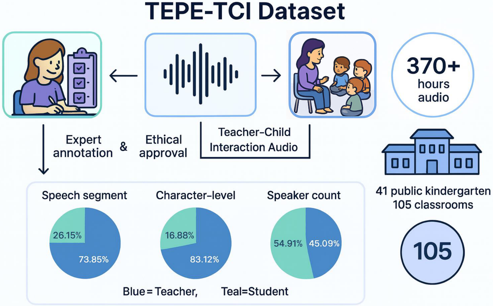
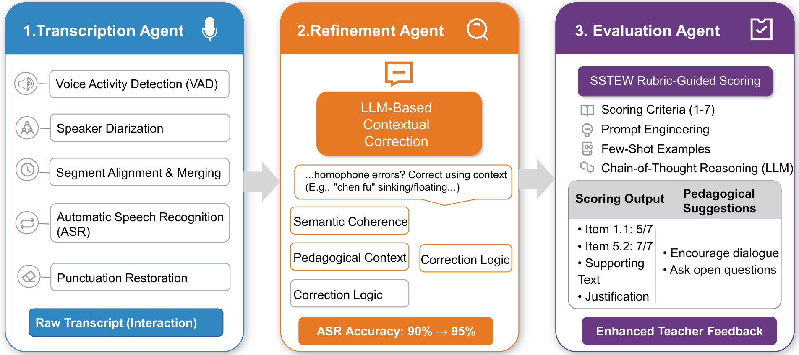
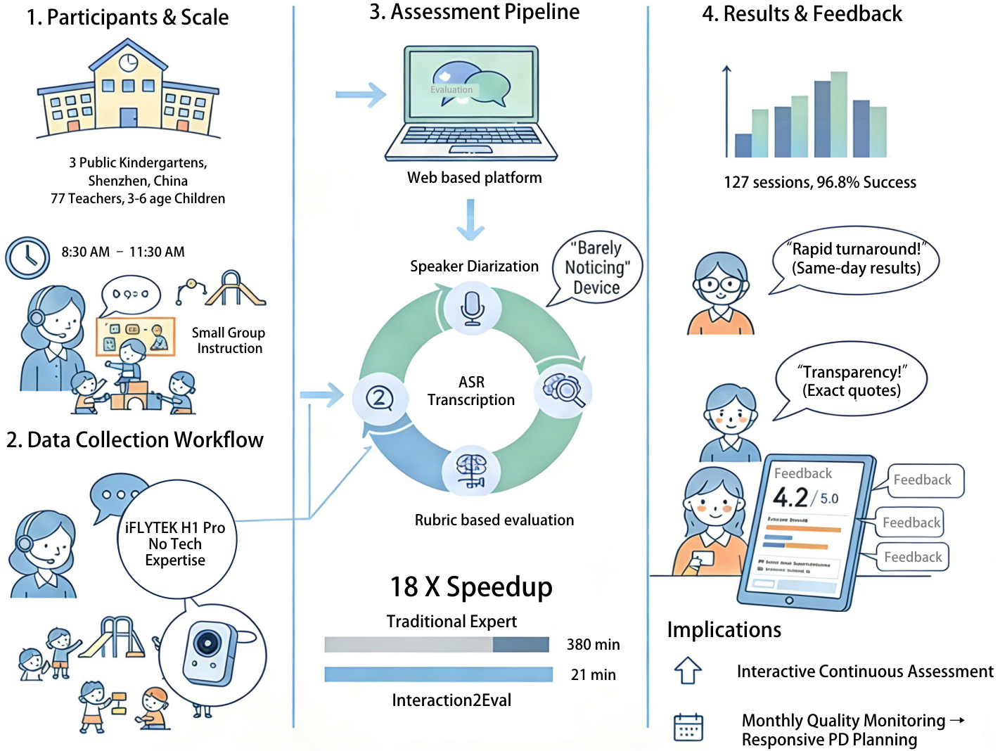

Authors
A cross-institutional collaboration between NUDT, CUHK-Shenzhen, and the University of Oxford
The research problem and our approach at a glance
High-quality teacher-child interaction (TCI) is fundamental to early childhood development, yet traditional expert-based assessment faces a critical scalability challenge. In China's system serving 36 million children across 250,000+ kindergartens, the cost and time requirements of manual observation make continuous quality monitoring infeasible, relegating assessment to infrequent episodic audits.
We investigate whether AI can serve as a scalable assessment teammate by extracting structured quality indicators and validating their alignment with human expert judgments. Our framework Interaction2Eval achieves up to 88% agreement with human experts, demonstrated through deployment validation across 43 classrooms with an 18× efficiency gain—enabling a shift from annual expert audits to monthly AI-assisted monitoring.
First large-scale dataset of naturalistic teacher-child interactions in Chinese preschools — 370 hours, 105 classrooms, standardized ECQRS-EC & SSTEW annotations.
Specialized LLM-based pipeline addressing domain challenges: child speech recognition, Mandarin homophone disambiguation, and rubric-based reasoning.
18× efficiency gains validated across 43 classrooms, enabling a new paradigm of continuous AI-assisted monitoring with targeted human oversight.
The first large-scale naturalistic teacher-child interaction corpus in Chinese preschools

Collected from 41 public preschools across three quality tiers in China, spanning 105 classrooms with 3–4 year-old children. Professional-grade recording equipment captured 370+ hours of naturalistic interactions during group activities, free play, outdoor activities, and daily routines.
Expert annotators (κ > 0.80) applied standardized ECQRS-EC (22 items, 4 domains) and SSTEW (15 items) rubrics with indicator-level binary coding.
Speech Segment Distribution
Speaker Count Distribution
A three-stage LLM pipeline from classroom audio to expert-level quality assessment

Processes raw classroom audio using FunASR Paraformer with speaker diarization and punctuation restoration. Identifies teacher vs. student speech segments automatically.
Leverages Qwen3-Max for context-aware correction of domain-specific errors — Mandarin homophones, educational terminology — reducing CER from 9.9% to 4.3%.
Applies rubric-based prompting to detect behavioral indicators from SSTEW and ECQRS-EC. Evidence-first reasoning: locate utterances → judge presence → justify with transcript evidence.
State-of-the-art LLMs evaluated against expert human annotations on two rubric scales
Curriculum-aligned assessment across Literacy, Mathematics, Science & Diversity domains
Language-focused assessment: Trust & Self-regulation, Language, Critical Thinking, Planning
Effect of the Refinement Agent on two state-of-the-art ASR models (5-hour test set, 16,168 reference characters)
| Model | Raw CER | After Refinement | Absolute ↓ | Relative ↓ |
|---|---|---|---|---|
| Whisper-large v3 | 35.1% | 23.2% | −11.9% | 33.4% |
| FunASR Paraformer | 9.9% | 4.3% | −5.6% | 56.6% |
ASR systems struggle most with education-specific vocabulary in preschool contexts. The word cloud visualizes the most frequently misrecognized terms, with size reflecting error frequency.
Errors concentrate on Mandarin homophones like jìnqū (进区, enter learning centers) vs. jìnqù (进去, go inside) — validating the need for our domain-aware Refinement Agent.
Validated across 43 classrooms in Shenzhen kindergartens over 4 weeks

"Same-day results — I could finally see what happened in my classroom that morning and adjust my afternoon accordingly." — Teacher feedback, Shenzhen pilot
"The exact quotes supporting each score made the evaluations understandable. This is like a data mirror for my teaching." — 22-year veteran teacher, Shenzhen pilot
Interaction2Eval reduces expert workload from 633 expert-hours to 35 expert-hours per 100 classrooms monthly — enabling a shift from annual episodic audits to continuous monthly monitoring with targeted human oversight.
A cross-institutional collaboration between NUDT, CUHK-Shenzhen, and the University of Oxford
If you use TEPE-TCI or Interaction2Eval in your research, please cite our paper
@inproceedings{li2026when, title = {When {AI} Meets Early Childhood Education: Large Language Models as Assessment Teammates in {Chinese} Preschools}, author = {Li, Xingming and Huang, Runke and Bao, Yanan and Jin, Yuye and Jiao, Yuru and Hu, Qingyong}, booktitle = {Proceedings of the 27th International Conference on Artificial Intelligence in Education ({AIED})}, year = {2026}, address = {Seoul, South Korea} }